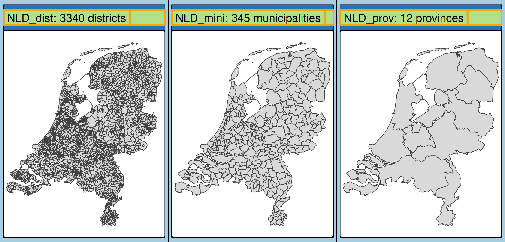
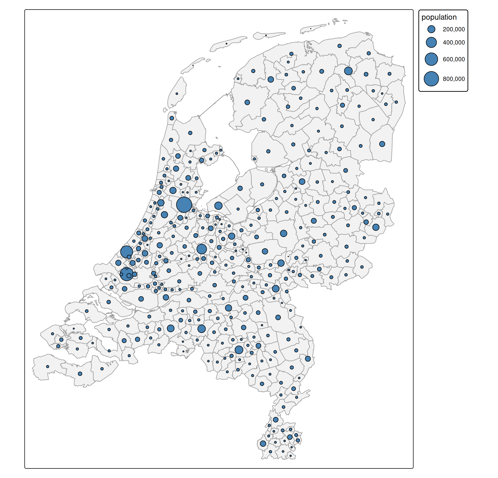
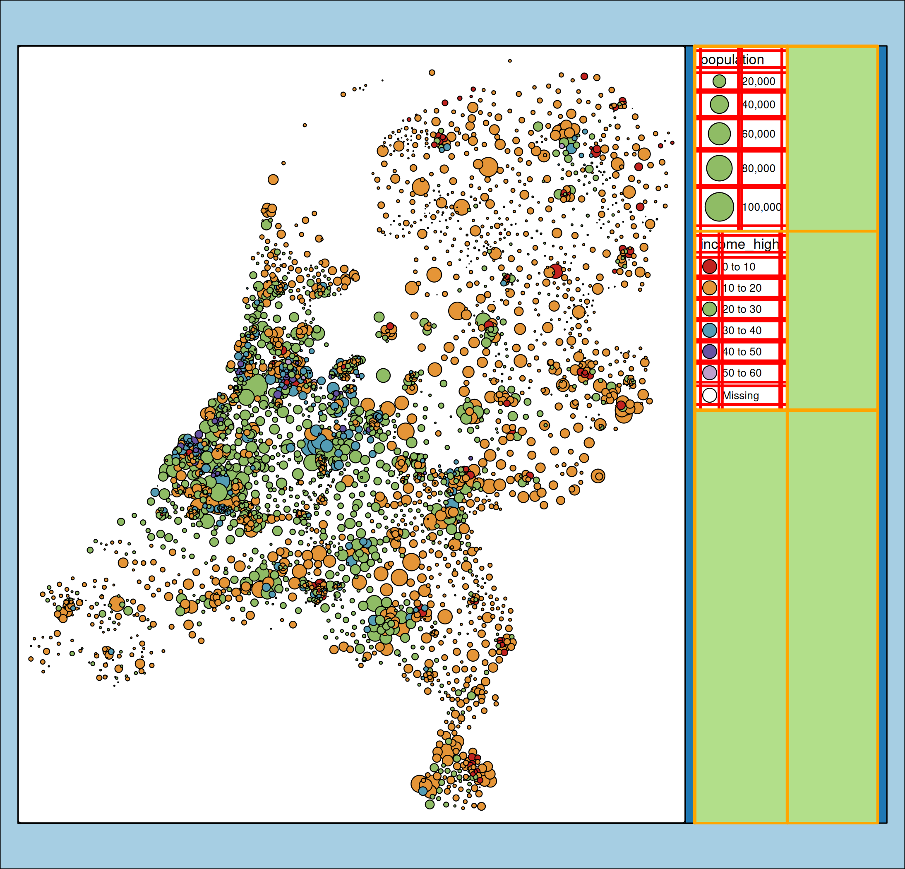

About the data
In tmap, there are two example data sets of the Netherlands:
- one for districts,
NLD_dist(3340 in total), - one for municipalities:
NLD_muni(345 in total), and - one for provinces:
NLD_prov(12 in total).
The first two datasets contain demographic data of the Netherlands as of 2022. The third dataset only contains metadata (names and codes) and will only be used to plot province borders.
tmap_arrange(
qtm(NLD_dist, title = "NLD_dist: 3340 districts"),
qtm(NLD_muni, title = "NLD_mini: 345 municipalities"),
qtm(NLD_prov, title = "NLD_prov: 12 provinces"),
ncol = 3
)
The variables in the NLD_dist and NLD_muni are the same:
names(NLD_dist)
#> [1] "code" "name" "province"
#> [4] "area" "urbanity" "population"
#> [7] "pop_0_14" "pop_15_24" "pop_25_44"
#> [10] "pop_45_64" "pop_65plus" "dwelling_total"
#> [13] "dwelling_value" "dwelling_ownership" "employment_rate"
#> [16] "income_low" "income_high" "edu_appl_sci"
#> [19] "geometry"We will create a choropleth about the variable "edu_appl_sci", which contains the percentage of 15-75 year old people who have a university degree (Dutch: WO) or applied sciences degree (Dutch: HBO), per district as of 1st October 2022.
Population of Dutch municipalities
The following code creates a bubble map of population per
tm_shape(NLD_muni) +
tm_polygons(fill = "grey95", col = "grey60") +
tm_symbols(
size = "population",
fill = "steelblue",
col = "black",
lwd = 1,
size.scale = tm_scale(values.scale = 2)
)
Note the scale function tm_scale() is general purpose. Because the data is categorical, it will forward its arguments to tm_scale_categorical().
Higher income class in Dutch districts
The following map shows the percentage of people with a higher income per Dutch district. This is encoded via a interval ‘rainbow’ color scale. Bubble sizes are proportional to the population size.
tm_shape(NLD_dist) +
tm_symbols(
size = "population",
fill = "income_high",
col = "black",
size.scale = tm_scale_continuous(values.scale = 2),
fill.scale = tm_scale_intervals(n = 5, values = "-tol.rainbow_wh_br"))
In order to find a suitable color palette for this example, we used
cols4all::c4a_gui()and selected a sequential ‘rainbow’ like color scale which is color blind friendly, and where the colors are not too bright and not too dark, because we would like to have sufficient contrast with both the black borders and the white background (see the working paper of cols4all). The - symbol indicates that we reverse the palette.
Note that we set n the number of class intervals to 5. However, for the standard interval method, which is called pretty, the parameter n is the preferred number of classes. In this case the resulting number of classes is 5 (just like pretty(c(0,60), 5)).